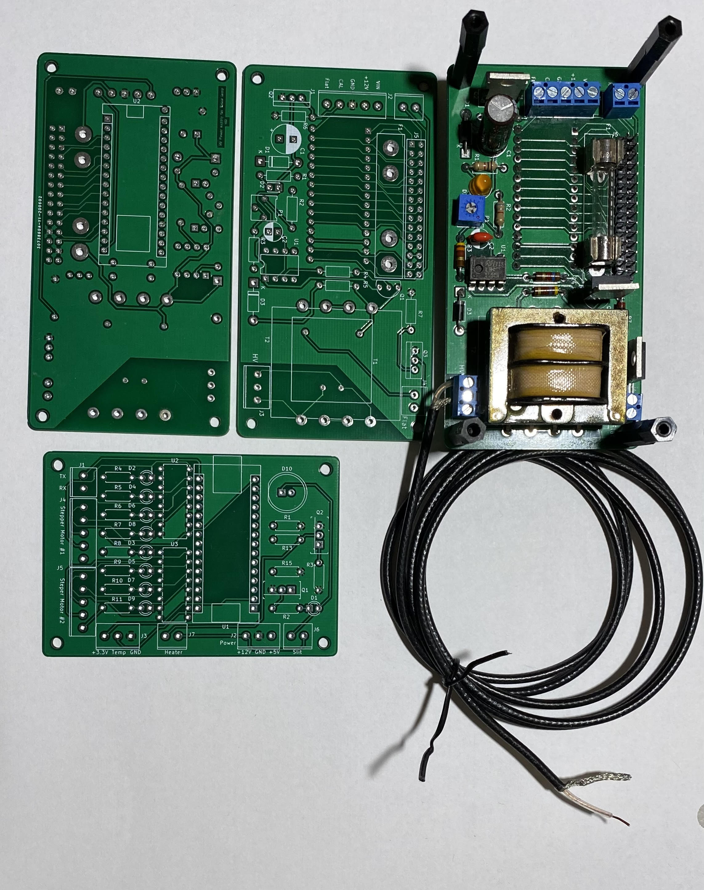

17. Electronics¶
Clarke Yeager, used KiCad [Kicad-1] to create the schematic and layout for several Printed Circuit Boards, emailed to China, made – with silk screen overlays and returned. The total cost was around 0.50USD per board, shipping was more than the costs of the boards. This package was emailed to Tony Rodda in England where he originated his own order. Shipping time in Europe was less than for Clarke in the US.

KiCad boards. A completed high-voltage board, without the Arduino BLE Sense attached to bottom, shown over a top and bottom image for the board. To the side is a smaller board for stepper controllers.¶
TODO Add Schematics